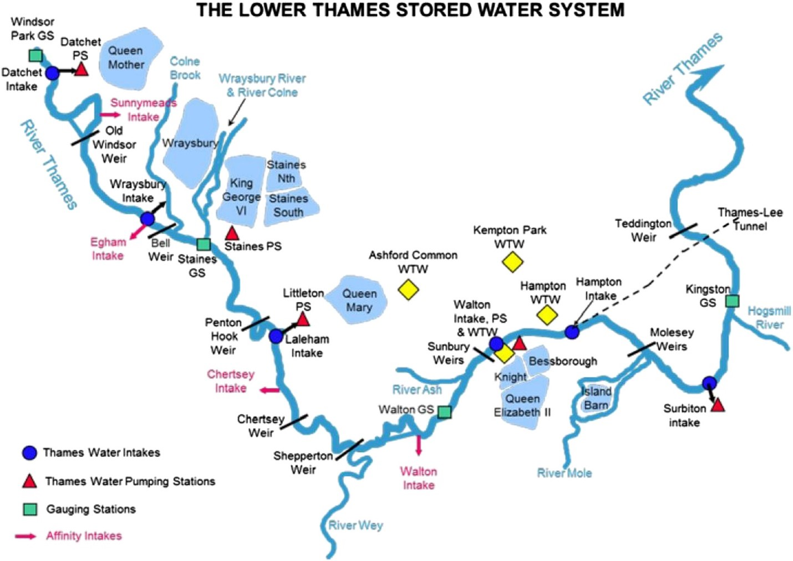
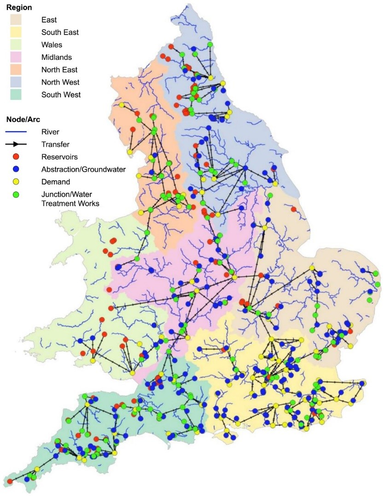
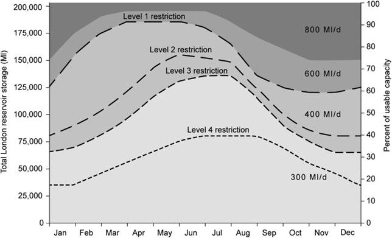

This mini-lecture provides an overview of what constitutes a water infrastructure network, how water infrastructure is distinct from other infrastructure networks and the different kinds of disruption that affect water supplies. The type of causes of water supply disruption, from asset-related failures to source-related failures, are discussed in turn.
Water infrastructure systems are made up of the assets that abstract (intakes), treat (water treatment plants), pump (pumping stations), convey (pipes) and store water (reservoirs/storage tanks) to supply municipal and sometimes commercial/industrial demand. Wastewater infrastructure systems are made up of the assets that transport (sewer), treat (wastewater treatment plant) and discharge wastewater back to the natural environment.
Figure 9.3.1 shows locations of water infrastructure along a section of the Thames, UK. As evident, intakes are assets that abstract water from the natural network of water resources, i.e. from rivers, lakes and groundwater.
Raw water may be stored in reservoirs or dams before being treated at a treatment plant
Treated water may be stored in tanks before or after being pumped to communities via a network of pipes
Wastewater is then transported from communities via a sewer network to be treated by wastewater treatment plants, before being returned to the rivers and the natural system.
Given that the treatment and pumping of water relies on a reliable supply of electricity, the electricity supply nodes which serve water assets are also an important element of the water infrastructure system to consider.

Figure 9.3.1: Locations of water infrastructure asset along a section of the river Thames (Mortazavi-Naeini et al. 2019)
Of course, the configuration of water infrastructure varies significantly depending on the local context. Different countries have different standards and protocols for water management, for example, for the level of treatment, the capacity and form of storage, and the kind of connection to consumers (e.g. household-level, versus standpipes).
Although water infrastructure datasets on treatment plants, intakes and pumping stations are hard to come by even at national scales, there is a global database of reservoirs and dams. This can be used for quantifying the volume of storage capacity and, hence, the resilience of a country’s water supplies to extreme water supply variations (Gaupp, Hall, and Dadson 2015; Hall et al. 2014). There are various global river network and catchment datasets, HydroSHEDS is one of the most commonly used among these.
Global hydrological models that provide data on runoff and river flows are also available. For example, the ISIMIP data depository provides a range of publicly available global hydrological datasets (Davie et al. 2013).
Further, the Joint Monitoring Programme is responsible for monitoring the progress of countries towards the UN Sustainable Development Goals. They provide a database on national-level connections to piped water supply and sewer networks. This can be used to understand the coverage of water infrastructure within a country.
The UN Food and Agricultural Organization publishes a database called AQUASTAT which provides national level water use data for different demands, for example, agricultural, domestic and industrial, as well as the volume of wastewater generated. This has been widely applied for quantifying water stress at a global scale (e.g. Doeffinger et al. (2020)).
Table 9.3.1 below provides an overview of some of the global data sources available on water infrastructure:
Table 9.3.1: Overview of some examples of global data sources for water infrastructure
| Datasets | Source |
|---|---|
| Reservoirs and dams | Global Dam Watch |
| Rivers | HydroSHEDS |
| Runoff | ISI-MIP |
| Connections to piped water supply and sewer systems | Joint Monitoring Programme |
| Water use | FAO, AquaSTAT |
All infrastructure is vulnerable to a range of climate extremes, with floods, earthquakes and hurricanes imposing a heavy financial burden in infrastructure damages. Water infrastructure systems stand-out compared to other infrastructure because both water resources and assets are vulnerable to climate and hydrological extremes.
Thus, multiple hazards disrupt water infrastructure in different ways, which are summarised in Table 9.3.2 below:
Table 9.3.2: Summary of the ways in which hazards disrupt water infrastructure
| Sub-s ector | Asset | Flood (plu vial/ ri ver/coa stal) |
Land slide | Hurr icane | Earth quake | Dr ought |
|---|---|---|---|---|---|---|
| Sources (s prings, wells, rivers) | N | N | N | N | Y | |
| Water | Dams and re servoir | N | N | N | Y | Y |
| Water tr eatment plants | Y | Y | N | Y | Y | |
| Pumping s tations | Y | Y | N | Y | N | |
| Potable storage tanks | N | N | N | N | Y | |
| Pi pelines | N | Y | N | N | N | |
| Waste water | Was tewater tr eatment plants | Y | Y | N | Y | N |
| Sewers | N | Y | N | Y | N |
The following sections explore the modelling approaches employed to analyse the risk that flood and drought hazards pose to water infrastructure systems.
Water supply disruptions can be caused by flood damage to water infrastructure assets or dependent electricity supply infrastructure. Figure 9.3.2 illustrates a network model of water infrastructure, comprising water infrastructure assets, such as water treatment plants and network connections to demand centres, in England and Wales.

Figure 9.3.2: Network model of water infrastructure, comprising water infrastructure assets, such as water treatment plants and network connections to demand centres, in England and Wales (Dobson et al. 2020)
These network models can be used to understand which demand centres could be disrupted by the failure of certain assets. The likelihood of certain assets being disrupted by climate extremes, such as flooding, can be determined by overlaying flood return period maps. This is put into practice during Hands-on 6.
The intersection between probability and consequence provides an indication of risk. For example, combining the likelihood of flood inundation at water infrastructure assets, or the electricity substations that supply water assets, with the population dependent on each asset can be used to quantify the risk of flood-induced water supply disruptions. If the likelihood of asset failure is unknown, asset failures and associated network disruptions can be randomly simulated to identify hotspots of critical assets or worst-case failure scenarios in water networks.
Water resources variations - such as water shortages and harmful water quality events - also pose a major risk to water supplies. Water shortages are often measured according to deviations in the volume of water stored in reservoirs. This aligns with the operating rules imposed on utility networks by managers: during droughts that result in the volume of stored water dropping to, say, 50% of their normal levels, utilities will put measures in place to ensure that water supplies will be able to outlast the drought. These measures might be fairly minor, such as a ban on the use of sprinklers for lawn irrigation, or they could be incredibly restrictive, such as being requested not to flush the toilet after urination, which happened during the Cape Town drought of 2019.
Thus, the risk of water shortages can be determined by analysing the probability of water shortages of varying severity or untreatable water quality and associated consequences for dependent populations. For example, assess the vulnerability of water resources systems to extreme droughts (Borgomeo et al. 2014). Level of Service is used as a risk metric, shown in Figure 9.3.3, quantifying the probability of exceeding planned frequencies of water shortages of varying severity.

Figure 9.3.3: Thresholds of reservoir storage over a given year that are associated with water use restrictions of different levels of severity in the Thames catchment, UK (Borgomeo et al. 2014)
The kinds of risk analysis discussed in this lecture are widely applied to guiding water infrastructure planning decisions, which will be discussed in future sections.
This mini-lecture provides an overview of the components of water infrastructure systems, how systems are affected by hazards and how the risks of different kinds of disruption can be analysed. You should now be able to identify the range of assets that make up systems of water infrastructure, recognise what distinguishes water infrastructure from other types of infrastructure, and be able to explain the different types of disruptions and hazards that affect water infrastructure.